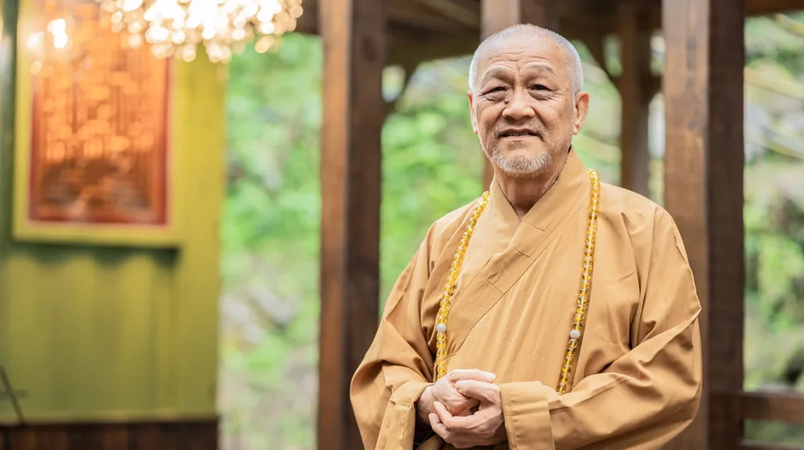

일과 휴식을 동시에? 전국 산사 워케이션, 놓치지 말아야 할 사찰 선택 가이드
사진: ki-mock koo / Pexels (무료 이미지, 출처 표기)
산사 워케이션, 왜 지금 주목받을까요?

바쁜 일상과 업무 스트레스 속에서 재충전과 집중을 동시에 갈망하는 분들이 많습니다. 이러한 현대인의 요구에 맞춰, 고즈넉한 산사에서 업무와 휴식을 병행하는 '산사 워케이션'이 새로운 대안으로 떠오르고 있습니다. 자연 속에서 명상과 사찰 문화를 체험하며 업무 효율까지 높일 수 있다는 점에서 큰 관심을 받고 있습니다.
산사 워케이션은 단순히 휴양지에서 일하는 것을 넘어, 사찰의 정갈한 환경과 수행 문화를 통해 심신을 정화하고 창의적인 아이디어를 얻는 기회를 제공합니다. 도시의 소음과 단절된 공간에서 온전히 자신에게 집중할 시간을 가질 수 있습니다.
전국 산사 워케이션, 어떤 사찰들이 있을까?
현재 산사 워케이션이라는 이름으로 공식 프로그램을 운영하는 사찰은 아직 많지 않지만, 일반적인 템플스테이 중 업무 환경을 일정 부분 제공하거나 장기 숙박이 가능한 곳들이 있습니다. 아래는 참고를 위한 가상의 사례이며, 실제 사찰의 프로그램은 변동될 수 있으므로 반드시 공식 홈페이지에서 최신 정보를 확인해야 합니다. 2024년 8월 기준으로 작성되었으며, 사찰별 특징은 예시입니다.
위 표는 산사 워케이션의 이해를 돕기 위한 가상 예시입니다. 실제 사찰의 템플스테이 프로그램은 명상, 예불, 발우공양(전통 식사법), 숲길 걷기 등으로 구성되며, 업무를 위한 전용 공간이나 고속 인터넷이 완비되지 않은 경우가 많습니다. '워케이션'이라는 개념에 특화된 시설을 찾기보다는, 개인적인 업무를 병행할 수 있는 정적인 템플스테이를 물색하는 것이 현실적입니다.
나에게 맞는 산사 워케이션 사찰, 이렇게 고르세요!
성공적인 산사 워케이션을 위해서는 자신에게 맞는 사찰을 신중하게 선택하는 것이 중요합니다. 다음 고려사항들을 참고하여 나만의 최적의 장소를 찾아보세요.
- 업무 환경 요구사항 확인: 고속 인터넷, 독립적인 책상, 전원 콘센트 등 필요한 업무 환경을 사전에 문의해야 합니다. 사찰은 수행 공간이므로, 도시의 사무실 환경을 기대하기는 어렵습니다.
- 프로그램 참여 여부: 명상, 예불 등 사찰 프로그램에 적극적으로 참여할 의사가 있는지 고려합니다. 일부 사찰은 템플스테이 참가자의 프로그램 참여를 권장하거나 필수로 여기기도 합니다.
- 자연 환경과 편의 시설: 주변 산책로, 명상하기 좋은 공간, 가까운 편의점이나 식당 유무 등 개인적인 휴식과 편의를 위한 환경도 중요합니다.
- 숙소 형태와 기간: 독방 또는 다인실, 짧은 주말 워케이션 또는 장기 숙박 등 희망하는 숙소 형태와 기간에 따라 선택지가 달라질 수 있습니다. 장기 숙박은 별도 문의가 필요합니다.
- 교통편: 대중교통 이용 시 접근성, 자가용 이용 시 주차 가능 여부 등을 미리 확인하는 것이 좋습니다.
산사 워케이션 신청 방법과 절차
산사 워케이션은 일반적으로 '템플스테이' 프로그램의 일환으로 진행되거나, 일부 사찰에서 특별히 운영하는 장기 숙박 프로그램에 해당합니다. 다음 단계를 참고하여 신청을 진행할 수 있습니다.
- 희망 사찰 선정 및 정보 확인: 관심 있는 사찰의 공식 홈페이지를 방문하여 템플스테이 또는 장기 숙박 프로그램을 확인합니다. 한국불교문화사업단 웹사이트에서도 전국 사찰 정보를 찾아볼 수 있습니다.
- 프로그램 내용 및 조건 문의: 워케이션 목적으로 방문하는 경우, 업무가 가능한 환경인지, 프로그램 참여는 의무인지 등을 사찰 관계자에게 직접 문의하여 오해를 방지합니다.
- 온라인 예약 또는 전화 문의: 대부분의 템플스테이는 온라인 예약 시스템을 통해 신청할 수 있습니다. 장기 숙박이나 특별한 요청 사항이 있다면 전화로 문의하는 것이 가장 정확합니다.
- 예약금 결제 및 확정: 예약 시 지정된 기간 내에 예약금을 결제하면 예약이 확정됩니다. 취소 및 환불 규정을 미리 확인하는 것이 중요합니다.
- 최종 안내 확인: 방문 전 사찰에서 보내는 최종 안내 메일이나 문자를 확인하여 준비물, 입실 시간, 유의사항 등을 숙지합니다.
정확한 신청 절차는 각 사찰의 정책에 따라 달라질 수 있으므로, 반드시 해당 사찰의 공식 안내를 따르시길 권장합니다.
성공적인 산사 워케이션을 위한 준비물과 팁
산사 워케이션을 더욱 알차게 보내기 위한 준비물과 몇 가지 팁을 소개합니다.
- 업무용품: 노트북, 충전기, 보조배터리, 필기구 등 필수 업무용품을 챙깁니다. Wi-Fi가 불안정할 수 있으니 개인 핫스팟 준비도 고려해볼 만합니다.
- 편안한 복장: 사찰 생활은 편안한 복장이 필수입니다. 움직임이 자유로운 옷과 양말, 갈아입을 여벌 옷을 준비하세요.
- 개인 위생용품: 칫솔, 치약, 수건, 비누 등 개인 위생용품은 기본적으로 제공되지 않는 경우가 많으니 직접 챙깁니다.
- 개인 상비약: 두통약, 소화제, 밴드 등 개인 상비약을 준비하여 만약의 상황에 대비합니다.
- 명상 및 독서 용품: 명상 시 필요한 개인 방석이나 요가 매트, 독서할 책 등을 챙겨가면 좋습니다.
- 방문 전 사찰 문화 숙지: 사찰 예절, 복장 규정, 소등 시간 등 기본적인 사찰 문화를 미리 알아두면 좋습니다.
- 디지털 디톡스 준비: 업무 시간 외에는 스마트폰 사용을 자제하고 자연과 수행에 집중하며 디지털 디톡스를 시도해 보세요.
산사 워케이션, 이것만은 꼭 알아두세요!
산사 워케이션은 일반적인 휴가와는 다른 특별한 경험을 제공하지만, 몇 가지 주의할 점이 있습니다.
- 업무 환경의 한계: 사찰은 수행 공간이므로, 사무실 수준의 완벽한 업무 환경(고속 인터넷, 전용 사무 기기 등)을 기대하기는 어렵습니다. 기본적인 업무 처리에 집중하는 것이 좋습니다.
- 사찰 예절 준수: 사찰은 종교 시설이자 수행 공간입니다. 스님과 다른 참가자들에게 방해가 되지 않도록 조용하고 경건한 태도를 유지해야 합니다. 큰 소리로 통화하거나 음악을 듣는 행위는 삼가야 합니다.
- 프로그램 참여 여부 확인: 템플스테이는 프로그램 참여가 중요한 부분입니다. 업무 외 시간에 적극적으로 사찰 프로그램에 참여함으로써 워케이션의 진정한 의미를 찾을 수 있습니다.
- 정확한 정보 확인: 사찰의 프로그램 내용, 숙소 형태, 제공되는 편의시설, 비용 등은 시기별로 변동될 수 있습니다. 방문 전에 반드시 해당 사찰의 공식 홈페이지나 전화 문의를 통해 최신 정보를 확인해야 합니다.
🔗 이 글도 함께 보면 좋아요: 산사 워케이션, 놓치면 후회? 예약부터 준비물까지 완벽 가이드